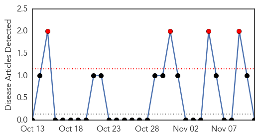
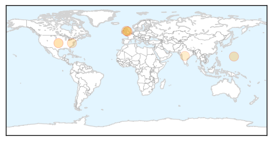
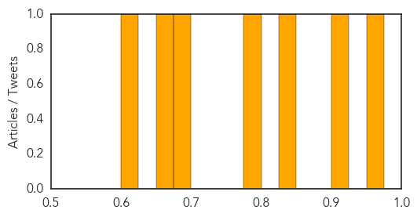

Mold/Fungal
30-Day Web Trend
4 alerts, 0 warnings

30-Day Twitter Trend
0 alerts, 0 warnings

Article Locations

Article Confidences

Top Articles:
-
No articles found for Nov 11, 2014
Top Tweets:
-
No tweets found for Nov 11, 2014
Hepatitis
30-Day Web Trend
1 alerts, 0 warnings

30-Day Twitter Trend
0 alerts, 0 warnings

Article Locations
Article Confidences
Top Articles:
- 0.969
- One in 10 sausages 'carries risk of hepatitis E virus'
- 0.911
- Indians yet to catch up on adult vaccination
- 0.828
- Danger dentist: 22,000 patients warned as blood test fears spark biggest ever NHS recall
- 0.799
- Dentist Desmond D'Mello at centre of infection alert pictured
- 0.690
- Hepatitis B testing and treatment rates are low among US veterans
- 0.661
- Drink 'cause' of liver deaths doubling in 20 years, minister say
- 0.606
- Pneumonia: The scourge that's killing India's children and what you can do to tackle it
Top Tweets:
-
No tweets found for Nov 11, 2014